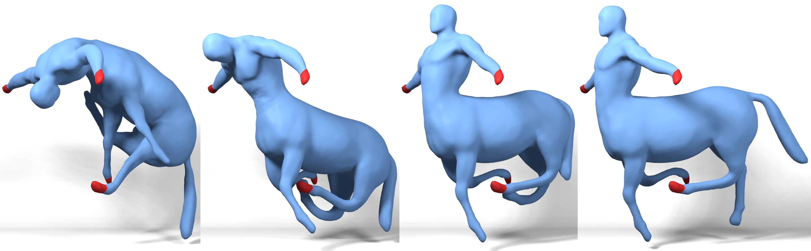

ACM Transactions on Graphics (Proc. SIGGRAPH), 2021..

Abstract: Local-global solvers such as ADMM for elastic simulation and geometry optimization struggle to resolve large rotations such as bending and twisting modes, and large distortions in the presence of barrier energies. We propose two improvements to address these challenges. First, we introduce a novel local-global splitting based on the polar decomposition that separates the geometric nonlinearity of rotations from the material nonlinearity of the deformation energy. The resulting ADMM-based algorithm is a combination of an L-BFGS solve in the global step and proximal updates of element stretches in the local step. We also introduce a novel method for dynamic reweighting that is used to adjust element weights at runtime for improved convergence. With both improved rotation handling and element weighting, our algorithm is considerably faster than state-of-the-art approaches for quasi-static simulations. It is also much faster at making early progress in parameterization problems, making it valuable as an initializer to jump-start second-order algorithms.
Preprint (PDF, 18.1 MB)
Supplementary material (PDF, 1.3 MB)
Our reference implementation is split across two separate repositories:
Erratum:
For parameterization problems the ADMM dual variables Zi and Ui are re-initialized after the very first ADMM iteration. Specifically, each Zi is set to the new sym((Di*X)^T), and Ui is set to zero. In subsequent iterations the variables are updated as described in the paper.
BibTeX:
@article{brown2021wrapd,
title={WRAPD: Weighted Rotation-aware ADMM for Parameterization and Deformation},
author={Brown, George E. and Narain, Rahul},
year={2021},
journal={ACM Transactions on Graphics (Proc. SIGGRAPH)},
volume={40},
number={4},
article={82},
month={8},
publisher={ACM},
}